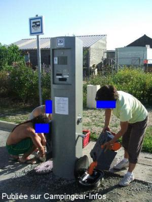
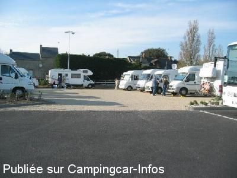

ASN = Aire de services avec stationnement nuit possible de :
LE CROISIC
(N° 764)
Accès/adresse :
Rue des Courlis
44490 LE CROISIC
44490 LE CROISIC
Latitude : (Nord) 47.28988° Décimaux ou 47° 17′ 23′′
Longitude : (Ouest) -2.50534° Décimaux ou -2° 30′ 19′′
Tarif : 2015
Stationnement : 6,30 €
Services : 2 €
Type de borne : URBAFLUX
Services :


Tous commerces
Autres informations :
Ouverte d'avril à octobre
Tel : +33(0)240 231 367
Dans la Zone Artisanale derrière la gare SNCF

Le 07/05/2010 par Lemasson

Le 02/05/2006 par claude92
de
Jardin
le 27/10/2012 :
De passage le 10/10 , qui n'est pas une première, l'aire de la gare est d'apparence calme et permets surtout de n'être pas collés les uns aux autres comparativement aux 2 autres aires. Il serait souhaitable de supprimer un emplacement ce qui permettrait d'élargir les emplacements restants. Les nuisances de l'aire de la gare viennent de l'usine voisine dès 6 heures du matin et non pas de la gare. Dommage pour une si jolie ville.
De passage le 10/10 , qui n'est pas une première, l'aire de la gare est d'apparence calme et permets surtout de n'être pas collés les uns aux autres comparativement aux 2 autres aires. Il serait souhaitable de supprimer un emplacement ce qui permettrait d'élargir les emplacements restants. Les nuisances de l'aire de la gare viennent de l'usine voisine dès 6 heures du matin et non pas de la gare. Dommage pour une si jolie ville.
de
flo
le 22/09/2012 :
Aire calme mais à proximité de la gare
Aire calme mais à proximité de la gare
de
Philippe KREMEUR
le 10/09/2009 :
Mon commentaire a été retiré pourtant il confirmait les tendances précédentes, notamment le calme, mais il insistait sur le coût de l'eau, l'étroitesse des emplacements et les passages de la police pour vérifier si l'on a bien payé. Je terminais en disant que le fait qu'une ville doit mettre des emplacements à notre disposition (c'est la loi) ne doit pas nécessairement générer des remerciements, excepté quand tout ou presque est bien. Et je le répète: tout n'est pas bien.
Alors, mon commentaire est à l'égal de ceux laissés par ailleurs: objectif et non "incivil".
Mon commentaire a été retiré pourtant il confirmait les tendances précédentes, notamment le calme, mais il insistait sur le coût de l'eau, l'étroitesse des emplacements et les passages de la police pour vérifier si l'on a bien payé. Je terminais en disant que le fait qu'une ville doit mettre des emplacements à notre disposition (c'est la loi) ne doit pas nécessairement générer des remerciements, excepté quand tout ou presque est bien. Et je le répète: tout n'est pas bien.
Alors, mon commentaire est à l'égal de ceux laissés par ailleurs: objectif et non "incivil".
de
Jon Good
le 10/01/2009 :
We found 4 aires in and around le croisic. the map shows the one by the railway station, this is also next to the tip, its horrible! goliterally just around the corner by the port and you can park in a semicircle looking over the marina (48hrs limit), there is also an aire with a great view on the coast road (does a loop) but not many spaces and quite a step into town.
We found 4 aires in and around le croisic. the map shows the one by the railway station, this is also next to the tip, its horrible! goliterally just around the corner by the port and you can park in a semicircle looking over the marina (48hrs limit), there is also an aire with a great view on the coast road (does a loop) but not many spaces and quite a step into town.
de
dan
le 03/11/2008 :
Passé 2 nuits en octobre 2008. Toujours du monde. L'aire est juste derrière la gare mais très calme malgré tout. De plus près du centre ville.
Passé 2 nuits en octobre 2008. Toujours du monde. L'aire est juste derrière la gare mais très calme malgré tout. De plus près du centre ville.
de
FAU
le 27/08/2007 :
Peu de chance de trouver de la place en plein mois d'Aout. Je confirme les services sont pratiques et propres. Il y a d'autres possibilités de stationner sur la commune dont un parking de 5 places sur l'Avenue de la Pierre Longue, à la pointe du Croisic en bord de mer. Magnifique. Il est préférable d'arriver le matin pour espérer une place.
Peu de chance de trouver de la place en plein mois d'Aout. Je confirme les services sont pratiques et propres. Il y a d'autres possibilités de stationner sur la commune dont un parking de 5 places sur l'Avenue de la Pierre Longue, à la pointe du Croisic en bord de mer. Magnifique. Il est préférable d'arriver le matin pour espérer une place.
de
sernic44
le 01/07/2006 :
J'ai constaté que la borne Euro-Relais qui avait été endommagée par des personnes (anti camping-carrites) a été remplacée par une borne Flot-Bleu. Le service reste néanmoins entièrement gratuit.
J'ai constaté que la borne Euro-Relais qui avait été endommagée par des personnes (anti camping-carrites) a été remplacée par une borne Flot-Bleu. Le service reste néanmoins entièrement gratuit.